Кандидаты, не утверждённые арты и не production.
Живая карточка A/B · Контрольная версия R4
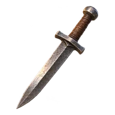
Оружие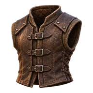
Корпус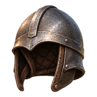
Голова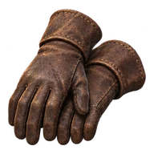
Руки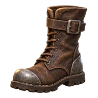
Ноги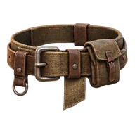
Пояс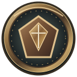
Основа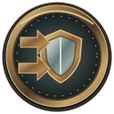
Перехват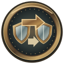
Передача защиты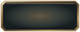
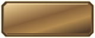
Замковый фон отклонён. Новый региональный кандидат и шесть предметов G1 подключены в лаборатории; финальная художественная приёмка открыта. B без постамента утверждён как компоновка. Старые векторы и терраса — резерв.
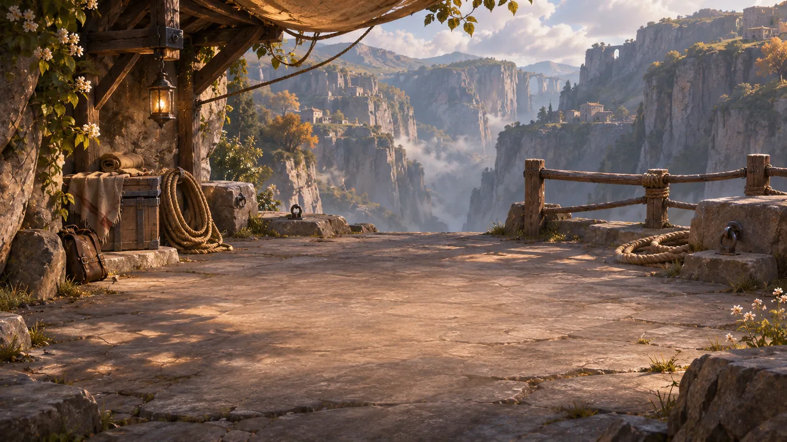